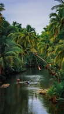

My Introduction Page
Biography
My name is Paul Steven. I am a student at AltSchool and joining AltSchool feels so surreal.AltSchool provides me with the perfect platform to pursue my educational goals and unleash my full potential.
I hope that my time at AltSchool will equip me with the necessary skills and knowledge to bring about meaningful change.
I am thrilled to be a part of the AltSchool community and I am eager to learn, grow, and collaborate with fellow students and educators. Together, we will shape a brighter future.
Reason for joining AltSchool;
I joined AltSchool to be a better web developer and also increase my tech skills and build myself a better future.

Goals and aspirations:
Develop strong critical thinking and problem-solving skills
Master various subjects and gain a deep understanding of them
Build strong communication and collaboration skills
Explore my interests and discover my passion
Prepare myself for future academic and career pursuits
I would also like you to join me at AltSchool Africa, click on the link below
Click here